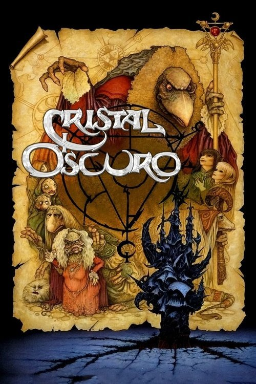

Cristal oscuro (1982)
Sinopsis Rápida
En un mundo de criaturas fantásticas y magia oscura, un joven Gelfling descubre un secreto que podría destruir el equilibrio del universo. ¿Podrá detener la amenaza antes de que sea demasiado tarde?
Sinopsis Detallada
Cristal Oscuro nos sumerge en Thra, un mundo mágico habitado por extrañas criaturas. Cuando Jen, un joven Gelfling, descubre un terrible secreto sobre los malvados Skeksis y su poder corruptor sobre el Cristal de la Gran Conjunción, se embarca en una peligrosa aventura para restaurar el equilibrio. La película es una obra maestra de la fantasía oscura, con un diseño de producción excepcional y una historia llena de simbolismo y misterio. La narrativa, aunque oscura, también explora temas de amistad, coraje y la importancia de luchar por lo que es correcto.
¿Por qué tenés que verla?
- Una experiencia visual inolvidable: La película está llena de criaturas y escenarios únicos e impactantes.
- El legado de Jim Henson: Un trabajo excepcional del maestro de los títeres, que combina fantasía y horror de una forma innovadora.
- Impacto cultural duradero: Cristal Oscuro influenció a generaciones de cineastas y artistas, dejando una huella imborrable en la cultura popular.
- Historia cautivadora y llena de simbolismo.
Idea Extra
Análisis del simbolismo y la alegoría en Cristal Oscuro: explorando los temas de poder, corrupción y el equilibrio ecológico.